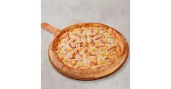
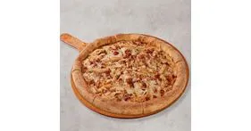

Pepperoni pizza es una pizza preparada con masa horneada, salsa de tomate, queso mozzarella y rodajas de pepperoni. Se caracteriza por su sabor salado y ligeramente picante, además de su queso derretido y su textura crujiente en los bordes. Es una de las pizzas más populares y consumidas en el mundo.
Precio: RD$700 – RD$1,500
Pizza Vegetariana
La pizza Vegetariana es una pizza preparada sin carne, elaborada con salsa de tomate, queso y diferentes vegetales como tomate, cebolla, pimientos, aceitunas, champiñones y maíz. Se caracteriza por su sabor fresco y su combinación de verduras coloridas y nutritivas.
Precio: RD$800 – RD$1,600

Pizza Hawaiana
La pizza Hawaiana es una pizza preparada con salsa de tomate, queso mozzarella, jamón y trozos de piña. Se caracteriza por combinar el sabor salado del jamón con el sabor dulce de la piña, creando una mezcla dulce y salada muy popular.
Precio: RD$800 – RD$1,600

Pizza de Pollo BBQ
La pizza de Pollo BBQ es una pizza preparada con salsa BBQ, queso mozzarella y trozos de pollo sazonado. También puede incluir cebolla y tocino. Se caracteriza por su sabor ahumado, dulce y salado, además de su queso derretido y el pollo jugoso.
Precio: RD$900 – RD$1,700
Pan de Ajo
son acompañantes muy populares en Papa John's. Están hechos con masa horneada y se preparan con mantequilla, ajo y especias. Los breadsticks tienen forma alargada y una textura suave por dentro y crujiente por fuera. Generalmente se sirven con salsa de ajo o salsa de tomate para acompañar.